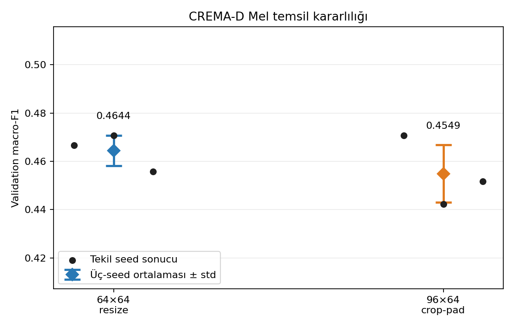
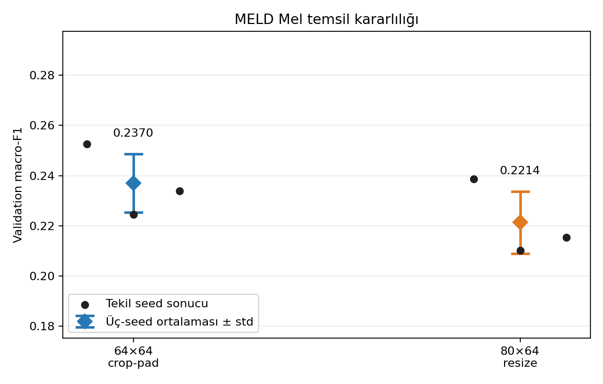
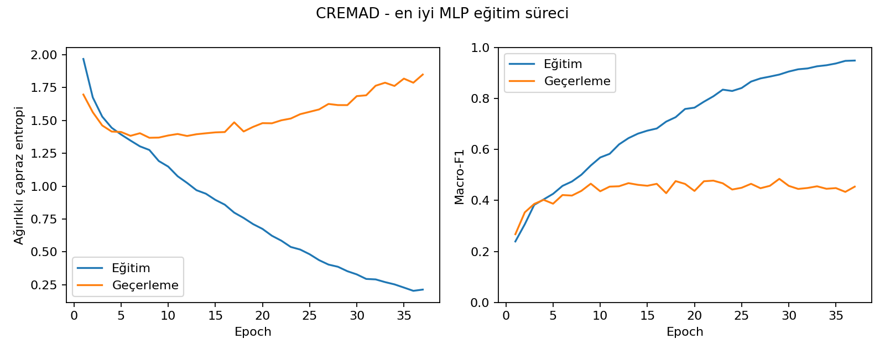
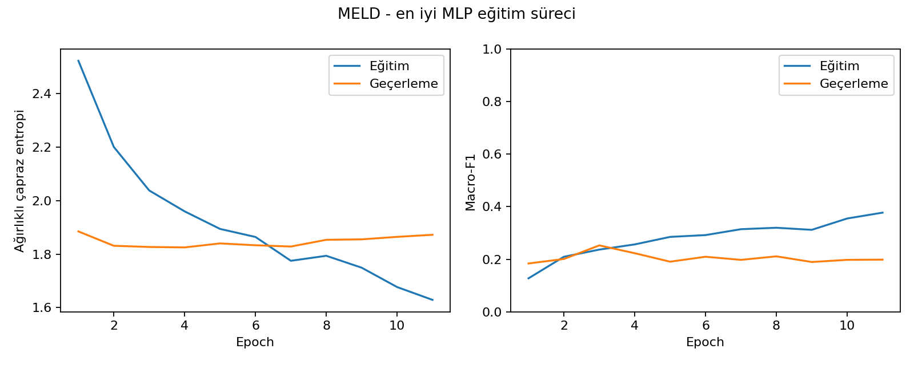
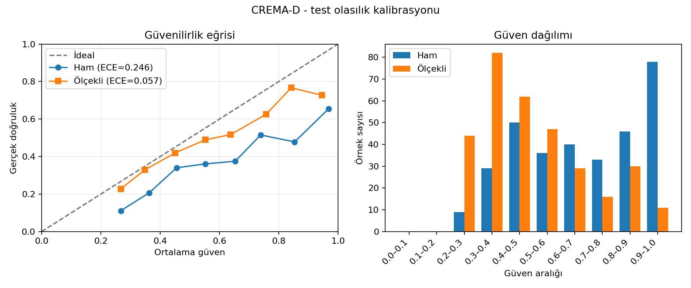
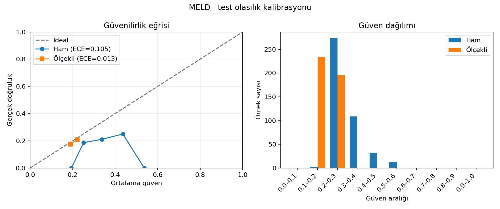
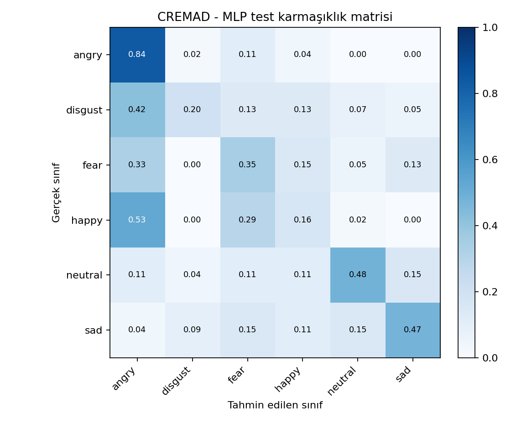
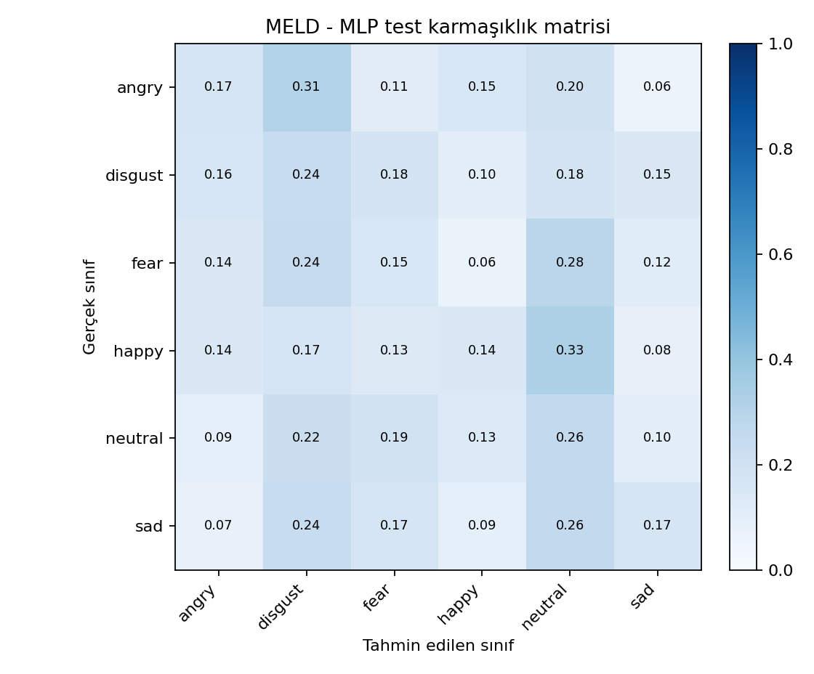

Proje konusu: Konuşmadan Duygu Tanıma (Speech Emotion Recognition)
Grup 23 – Ahmet Babagil – 211101067
| Alan | Bilgi |
|---|---|
| Orijinal Veri Seti Adı | CREMA-D ve MELD |
| Proje Grubu | Grup 23 |
| Öğrenci | Ahmet Babagil – 211101067 |
| Google Drive teslim klasörü | https://drive.google.com/drive/folders/1Hbp4WtCGFZjpvQCDxFmqtOmeqq-SMPvW?usp=sharing |
| GitHub geliştirme dalı | https://github.com/AhmetBabagil/speech-emotion-recognition/tree/feat/speech-emotion-recognition |
İlk iki aşamada kullanılan CREMA-D ve MELD veri kümeleri değişmemiştir. Bu nedenle orijinal veri tekrar çoğaltılmamış; Drive teslim klasörü kodu, Git geliştirme geçmişini, en iyi modelleri ve ara/nihai CSV, JSON ve PNG çıktılarını barındıracak şekilde düzenlenmiştir.
| Dosya | Görev |
|---|---|
| odev3/run_experiment.py | Tüm veri kümesi için tarama, yerel iyileştirme, çoklu seed doğrulaması ve tek seferlik test değerlendirmesini çalıştırır. |
| odev3/features_melspec.py | Sesi 16 kHz mono yükler; log-Mel spektrogramı sabit boyuta getirip 4096 elemanlı vektöre dönüştürür. |
| odev3/dataset.py | Özellikleri yapılandırmaya göre cache’ler ve yalnız eğitim katında öğrenilen z-score normalizasyonunu uygular. |
| odev3/model.py | Hazır model kullanmadan yapılandırılabilir PyTorch MLP ağını kurar. |
| odev3/training.py | Ağırlıklı çapraz entropi, AdamW, erken durdurma ve metrik hesaplamalarını gerçekleştirir. |
| odev3/uncertainty.py | Held-out sınıflandırma metrikleri için sınıf-korumalı bootstrap güven aralıklarını hesaplar. |
| odev3/calibration.py | NLL, Brier ve ECE ölçer; validation olasılıklarında sıcaklık katsayısını öğrenip olasılıkları ölçekler. |
| odev3/search_space.py | 16 temel tarama adayını ve kazanan çevresindeki 14 yerel adayı üretir. |
| odev3/feature_ablation.py | 64/80/96 Mel, 64/96 kare ve crop/resize temsillerini yalnız geçerleme setinde karşılaştırır. |
| odev3/feature_stability.py | En güçlü iki Mel temsilini seed 42/143/244 ile yalnız geçerleme setinde yeniden eğitip ortalama ve sapmayı ölçer. |
| odev3/hyperparameter_effects.py | Tarama ve iyileştirme koşularını parametre değerlerine göre gruplayıp koşu sayısı, ortalama, sapma ve performans farklarını özetler. |
| odev3/pipeline.py | Speaker-independent bölmeleri, resume durumunu, model kaydını, tahminleri, belirsizliği ve validation-temelli kalibrasyonu yönetir. |
| odev3/build_report.py | Gerçek deney çıktılarından bu HTML ve DOCX raporlarını üretir. |
Özellik karşılaştırması: python odev3/feature_ablation.py --corpora cremad meld --max-epochs 60 --device cpu --feature-workers 4
Çoklu-seed özellik doğrulaması: python -m odev3.feature_stability --corpora cremad meld --max-epochs 60 --seeds 42 143 244 --device cpu --feature-workers 4
Hiperparametre etki özeti: python -m odev3.hyperparameter_effects --corpora cremad meld --output-root odev3/outputs --analysis-root odev3/hyperparameter_effects
Rapor: python odev3/build_report.py --output-root odev3/outputs
| Veri seti | Çıktı | İçerik | Durum |
|---|---|---|---|
| CREMA-D | odev3/outputs/cremad/best_model.pt | En iyi MLP, normalizasyon ve sınıf ağırlıkları | Hazır (8.7 MB) |
| CREMA-D | odev3/outputs/cremad/validation_results.csv | 32 geçerleme deneyinin tam tablosu | Hazır (7.1 KB) |
| CREMA-D | odev3/outputs/cremad/best_training_history.csv | Seçilen koşunun epoch geçmişi | Hazır (7.4 KB) |
| CREMA-D | odev3/outputs/cremad/test_predictions.csv | Test örneği tahmin ve olasılıkları | Hazır (90.1 KB) |
| CREMA-D | odev3/outputs/cremad/test_uncertainty.json | Test metriklerinin %95 bootstrap güven aralıkları | Hazır (0.8 KB) |
| CREMA-D | odev3/outputs/cremad/test_calibration.json | Ham test olasılıklarının NLL, Brier ve ECE özeti | Hazır (3.0 KB) |
| CREMA-D | odev3/outputs/cremad/temperature_scaling.json | Validation’da öğrenilen sıcaklık ile ham/ölçekli karşılaştırma | Hazır (14.2 KB) |
| CREMA-D | odev3/outputs/cremad/test_confusion_matrix.png | Normalize test karmaşıklık matrisi | Hazır (81.1 KB) |
| CREMA-D | odev3/outputs/cremad/test_reliability_diagram.png | Ham ve ölçekli test güvenilirlik diyagramı | Hazır (0.1 MB) |
| CREMA-D | odev3/outputs/cremad/result.json | Bölme, yöntem, model ve metrik özeti | Hazır (26.7 KB) |
| CREMA-D | odev3/hyperparameter_effects/cremad/parameter_effects.csv | Her parametre değeri için validation macro-F1 dağılımı | Hazır (4.5 KB) |
| CREMA-D | odev3/hyperparameter_effects/cremad/parameter_effect_overview.csv | En güçlü ve zayıf betimsel parametre grupları | Hazır (1.4 KB) |
| CREMA-D | odev3/feature_stability/cremad/feature_stability_runs.csv | İki temsil × üç seed ham validation koşuları | Hazır (2.8 KB) |
| CREMA-D | odev3/feature_stability/cremad/feature_stability.csv | Üç-seed ortalama, standart sapma ve sıralama | Hazır (0.8 KB) |
| CREMA-D | odev3/feature_stability/cremad/feature_stability_comparison.json | Eşleştirilmiş seed farkları ve aday kazanım sayıları | Hazır (0.9 KB) |
| CREMA-D | odev3/feature_stability/cremad/feature_stability.png | Seed noktaları ile ortalama ± standart sapma görseli | Hazır (46.3 KB) |
| MELD | odev3/outputs/meld/best_model.pt | En iyi MLP, normalizasyon ve sınıf ağırlıkları | Hazır (8.6 MB) |
| MELD | odev3/outputs/meld/validation_results.csv | 32 geçerleme deneyinin tam tablosu | Hazır (7.0 KB) |
| MELD | odev3/outputs/meld/best_training_history.csv | Seçilen koşunun epoch geçmişi | Hazır (2.3 KB) |
| MELD | odev3/outputs/meld/test_predictions.csv | Test örneği tahmin ve olasılıkları | Hazır (0.1 MB) |
| MELD | odev3/outputs/meld/test_uncertainty.json | Test metriklerinin %95 bootstrap güven aralıkları | Hazır (0.8 KB) |
| MELD | odev3/outputs/meld/test_calibration.json | Ham test olasılıklarının NLL, Brier ve ECE özeti | Hazır (2.8 KB) |
| MELD | odev3/outputs/meld/temperature_scaling.json | Validation’da öğrenilen sıcaklık ile ham/ölçekli karşılaştırma | Hazır (13.3 KB) |
| MELD | odev3/outputs/meld/test_confusion_matrix.png | Normalize test karmaşıklık matrisi | Hazır (79.0 KB) |
| MELD | odev3/outputs/meld/test_reliability_diagram.png | Ham ve ölçekli test güvenilirlik diyagramı | Hazır (96.3 KB) |
| MELD | odev3/outputs/meld/result.json | Bölme, yöntem, model ve metrik özeti | Hazır (25.6 KB) |
| MELD | odev3/hyperparameter_effects/meld/parameter_effects.csv | Her parametre değeri için validation macro-F1 dağılımı | Hazır (4.5 KB) |
| MELD | odev3/hyperparameter_effects/meld/parameter_effect_overview.csv | En güçlü ve zayıf betimsel parametre grupları | Hazır (1.4 KB) |
| MELD | odev3/feature_stability/meld/feature_stability_runs.csv | İki temsil × üç seed ham validation koşuları | Hazır (2.8 KB) |
| MELD | odev3/feature_stability/meld/feature_stability.csv | Üç-seed ortalama, standart sapma ve sıralama | Hazır (0.8 KB) |
| MELD | odev3/feature_stability/meld/feature_stability_comparison.json | Eşleştirilmiş seed farkları ve aday kazanım sayıları | Hazır (0.9 KB) |
| MELD | odev3/feature_stability/meld/feature_stability.png | Seed noktaları ile ortalama ± standart sapma görseli | Hazır (47.8 KB) |
Manifest toplam 5199 ses kaydı içerir: 2480 CREMA-D ve 2719 MELD. Her iki veri kümesi kızgın, tiksinti, korku, mutlu, nötr ve üzgün olmak üzere aynı altı sınıfa eşlenmiştir.
Her veri kümesi seed 42 ile konuşmacı-temelli yaklaşık %70 eğitim, %15 geçerleme ve %15 test katlarına ayrılmıştır. Aynı konuşmacı iki farklı katta bulunmaz. Sonuç JSON dosyalarındaki üç konuşmacı kesişimi de boş kümedir. Özellik normalizasyonunun ortalama ve standart sapması yalnız eğitim katında öğrenilmiştir.
| Veri seti | Kat | Kayıt | Konuşmacı | Kızgın | Tiksinti | Korku | Mutlu | Nötr | Üzgün |
|---|---|---|---|---|---|---|---|---|---|
| CREMA-D | Eğitim | 1749 | 22 | 299 | 299 | 299 | 299 | 255 | 298 |
| CREMA-D | Geçerleme | 410 | 5 | 70 | 70 | 70 | 70 | 60 | 70 |
| CREMA-D | Test | 321 | 4 | 55 | 55 | 55 | 55 | 46 | 55 |
| MELD | Eğitim | 1883 | 111 | 347 | 244 | 239 | 347 | 337 | 369 |
| MELD | Geçerleme | 406 | 24 | 82 | 55 | 41 | 77 | 74 | 77 |
| MELD | Test | 430 | 23 | 71 | 62 | 78 | 76 | 89 | 54 |
Eğitim kaybında her sınıf için w_c = N / (K × n_c) ters frekans ağırlığı kullanılmıştır. Böylece özellikle MELD’de daha az görülen tiksinti ve korku sınıfları kayıp fonksiyonunda daha yüksek katkı alır. Ağırlıklar yalnız eğitim etiketlerinden hesaplanmıştır.
| Veri seti | Kızgın | Tiksinti | Korku | Mutlu | Nötr | Üzgün |
|---|---|---|---|---|---|---|
| CREMA-D | 0.9749 | 0.9749 | 0.9749 | 0.9749 | 1.1431 | 0.9782 |
| MELD | 0.9044 | 1.2862 | 1.3131 | 0.9044 | 0.9313 | 0.8505 |
Sesler librosa ile 16 kHz ve mono yüklenmiştir. librosa.feature.melspectrogram çağrısında 64 Mel bandı, n_fft=1024, hop_length=512, 20–8000 Hz ve power=2 kullanılmış; güç değerleri top_db=80 ile log-dB ölçeğine dönüştürülmüştür. 64×64 matris satır-major düzleştirilerek tam 4096 boyutlu vektör elde edilmiştir. PCA veya önceden eğitilmiş bir öznitelik modeli kullanılmamıştır.
Zaman ve frekans temsilini test setine dokunmadan incelemek için referans MLP ile seed 42 sabit tutulmuş; 64/80/96 Mel bandı, 64/96 kare ve merkez crop-pad/tüm konuşmayı resize seçeneklerinden oluşan sekiz aday karşılaştırılmıştır.
| Veri seti | Deney | Zaman işlemi | Mel | Kare | Boyut | En iyi ep. | Doğ. | Deng. Doğ. | Macro-F1 | Seçildi |
|---|---|---|---|---|---|---|---|---|---|---|
| CREMA-D | 1 | crop_pad | 64 | 64 | 4096 | 47 | 0.4756 | 0.4754 | 0.4645 | Hayır |
| CREMA-D | 2 | resize | 64 | 64 | 4096 | 5 | 0.4683 | 0.4687 | 0.4667 | Hayır |
| CREMA-D | 3 | crop_pad | 64 | 96 | 6144 | 7 | 0.4439 | 0.4401 | 0.4371 | Hayır |
| CREMA-D | 4 | resize | 64 | 96 | 6144 | 3 | 0.4659 | 0.4659 | 0.4639 | Hayır |
| CREMA-D | 5 | crop_pad | 80 | 64 | 5120 | 7 | 0.4659 | 0.4623 | 0.4549 | Hayır |
| CREMA-D | 6 | resize | 80 | 64 | 5120 | 29 | 0.4683 | 0.4675 | 0.4652 | Hayır |
| CREMA-D | 7 | crop_pad | 96 | 64 | 6144 | 14 | 0.4805 | 0.4810 | 0.4707 | Evet |
| CREMA-D | 8 | resize | 96 | 64 | 6144 | 31 | 0.4683 | 0.4663 | 0.4669 | Hayır |
| MELD | 1 | crop_pad | 64 | 64 | 4096 | 3 | 0.2611 | 0.2728 | 0.2525 | Evet |
| MELD | 2 | resize | 64 | 64 | 4096 | 2 | 0.2192 | 0.2142 | 0.2084 | Hayır |
| MELD | 3 | crop_pad | 64 | 96 | 6144 | 6 | 0.2192 | 0.2131 | 0.2099 | Hayır |
| MELD | 4 | resize | 64 | 96 | 6144 | 2 | 0.2562 | 0.2397 | 0.2336 | Hayır |
| MELD | 5 | crop_pad | 80 | 64 | 5120 | 13 | 0.2241 | 0.2249 | 0.2204 | Hayır |
| MELD | 6 | resize | 80 | 64 | 5120 | 2 | 0.2438 | 0.2415 | 0.2386 | Hayır |
| MELD | 7 | crop_pad | 96 | 64 | 6144 | 5 | 0.2241 | 0.2245 | 0.2231 | Hayır |
| MELD | 8 | resize | 96 | 64 | 6144 | 4 | 0.2167 | 0.2167 | 0.2064 | Hayır |
CREMA-D için 96×64 crop-pad macro-F1=0.4707 ile birinci olmuştur. Ana 4096-boyutlu temsile göre tek-seed fark +0.0040 olmuştur. MELD için 64×64 crop-pad macro-F1=0.2525 ile birinci olmuştur. Ana 4096-boyutlu temsil liderliğini korumuştur. Tek-seed fark küçük olduğundan nihai checkpoint test sonucuna göre değiştirilmemiş; adaylar aşağıdaki üç-seed validation deneyinde ayrıca doğrulanmıştır.
Tek-seed ablation sıralamasındaki küçük farkların kararlılığını ölçmek için her corpus’ta ana temsil ve en güçlü alternatif aynı referans MLP ile seed 42, 143 ve 244 üzerinde yeniden eğitilmiştir. Seçim ölçütü üç seed’in validation macro-F1 ortalamasıdır; standart sapma, minimum ve maksimum değerler de saklanmıştır.
| Veri seti | Aday | Zaman işlemi | Mel | Kare | Boyut | Koşu | Seed’ler | Macro-F1 ort. ± std | Minimum | Maksimum | Seçildi |
|---|---|---|---|---|---|---|---|---|---|---|---|
| CREMA-D | Ana temsil | resize | 64 | 64 | 4096 | 3 | 42,143,244 | 0.4644 ± 0.0063 | 0.4558 | 0.4707 | Evet |
| CREMA-D | Alternatif | crop-pad | 96 | 64 | 6144 | 3 | 42,143,244 | 0.4549 ± 0.0119 | 0.4422 | 0.4707 | Hayır |
| MELD | Ana temsil | crop-pad | 64 | 64 | 4096 | 3 | 42,143,244 | 0.2370 ± 0.0117 | 0.2245 | 0.2525 | Evet |
| MELD | Alternatif | resize | 80 | 64 | 5120 | 3 | 42,143,244 | 0.2214 ± 0.0123 | 0.2102 | 0.2386 | Hayır |
CREMA-D ana 64×64 temsilinin üç-seed validation macro-F1 değeri 0.4644 ± 0.0063, alternatifin değeri 0.4549 ± 0.0119; ortalama fark +0.0095 olmuştur. Ana temsil eşleştirilmiş 3 seed’in 2 tanesinde daha yüksek macro-F1 üretmiştir. MELD ana 64×64 temsilinin üç-seed validation macro-F1 değeri 0.2370 ± 0.0117, alternatifin değeri 0.2214 ± 0.0123; ortalama fark +0.0156 olmuştur. Ana temsil eşleştirilmiş 3 seed’in 3 tanesinde daha yüksek macro-F1 üretmiştir. Seed 42 ile yeniden eğitilen 4 aday, ilk ablation koşularındaki macro-F1 değerlerini tam olarak yeniden üretmiş; maksimum mutlak fark 0.0000000000 olmuştur. Bu doğrulamada yalnız train ve validation özellikleri yüklenmiş, held-out test kayıtları model veya temsil seçiminde kullanılmamıştır.


MLP tamamen PyTorch ile sıfırdan kurulmuştur. Her gizli blok Linear → isteğe bağlı BatchNorm1d → aktivasyon → Dropout sırasındadır. Çıkış katmanı altı logit üretir. Eğitimde weighted CrossEntropyLoss, AdamW, gradient norm clipping (5.0) ve validation macro-F1 tabanlı erken durdurma kullanılmıştır. Üst sınır 60 epoch’tur.
| Veri seti | Zaman işlemi | Katman dizisi | Gizli katman | Aktivasyon | Batch norm | Dropout | Eğitilebilir parametre |
|---|---|---|---|---|---|---|---|
| CREMA-D | resize | 4096 → 512 → 256 → 128 → 6 | 3 | relu | Evet | 0.3000 | 2264454 |
| MELD | crop_pad | 4096 → 512 → 256 → 6 | 2 | relu | Evet | 0.5000 | 2232070 |
Her veri kümesinde önce tüm temel hiperparametre gruplarını tek faktörlü ve yorumlanabilir biçimde kapsayan 16 tarama deneyi çalıştırılmıştır. Tarama kazananının çevresinde 14 yerel iyileştirme denenmiş; son yapı seed 42, 143 ve 244 ile toplam üç kez ölçülmüştür. Model seçimi yalnız validation macro-F1, eşitlikte dengeli doğruluk ve validation loss ile yapılmıştır. Test özellikleri 32 koşu tamamlanmadan yüklenmemiştir.
| Veri seti | Koşu | Batch | LR | Patience | Gizli yapılar | Aktivasyon | BN | Dropout | Weight decay | Seed |
|---|---|---|---|---|---|---|---|---|---|---|
| CREMA-D | 32 | 32, 64, 128 | 0.0001, 0.0001, 0.0003, 0.0006, 0.0010 | 5, 6, 8, 10, 12 | 1024-512-256, 256, 256-128-64, 512-256, 512-256-128, 768-384-192 | gelu, relu, tanh | Hayır, Evet | 0.0000, 0.2000, 0.3000, 0.4000, 0.5000 | 0.0000, 0.0001 | 42, 143, 244 |
| MELD | 32 | 32, 64, 128 | 0.0001, 0.0001, 0.0003, 0.0006, 0.0010 | 5, 6, 8, 10, 12 | 1024-512-256, 256, 256-128, 512-256, 512-256-128, 768-384 | gelu, relu, tanh | Hayır, Evet | 0.0000, 0.3000, 0.4000, 0.5000, 0.6000 | 0.0000, 0.0001 | 42, 143, 244 |
| Deney | Aşama | Seed | LR | Batch | Pat. | Katman | H1 | H2 | H3 | Akt. | BN | Drop. | WD |
|---|---|---|---|---|---|---|---|---|---|---|---|---|---|
| 1 | Tarama | 42 | 0.0003 | 64 | 8 | 2 | 512 | 256 | - | relu | Evet | 0.3000 | 0.0001 |
| 2 | Tarama | 42 | 0.0003 | 32 | 8 | 2 | 512 | 256 | - | relu | Evet | 0.3000 | 0.0001 |
| 3 | Tarama | 42 | 0.0003 | 128 | 8 | 2 | 512 | 256 | - | relu | Evet | 0.3000 | 0.0001 |
| 4 | Tarama | 42 | 0.0010 | 64 | 8 | 2 | 512 | 256 | - | relu | Evet | 0.3000 | 0.0001 |
| 5 | Tarama | 42 | 0.0001 | 64 | 8 | 2 | 512 | 256 | - | relu | Evet | 0.3000 | 0.0001 |
| 6 | Tarama | 42 | 0.0003 | 64 | 5 | 2 | 512 | 256 | - | relu | Evet | 0.3000 | 0.0001 |
| 7 | Tarama | 42 | 0.0003 | 64 | 12 | 2 | 512 | 256 | - | relu | Evet | 0.3000 | 0.0001 |
| 8 | Tarama | 42 | 0.0003 | 64 | 8 | 1 | 256 | - | - | relu | Evet | 0.3000 | 0.0001 |
| 9 | Tarama | 42 | 0.0003 | 64 | 8 | 3 | 512 | 256 | 128 | relu | Evet | 0.3000 | 0.0001 |
| 10 | Tarama | 42 | 0.0003 | 64 | 8 | 3 | 1024 | 512 | 256 | relu | Evet | 0.3000 | 0.0001 |
| 11 | Tarama | 42 | 0.0003 | 64 | 8 | 2 | 512 | 256 | - | gelu | Evet | 0.3000 | 0.0001 |
| 12 | Tarama | 42 | 0.0003 | 64 | 8 | 2 | 512 | 256 | - | tanh | Evet | 0.3000 | 0.0001 |
| 13 | Tarama | 42 | 0.0003 | 64 | 8 | 2 | 512 | 256 | - | relu | Hayır | 0.3000 | 0.0001 |
| 14 | Tarama | 42 | 0.0003 | 64 | 8 | 2 | 512 | 256 | - | relu | Evet | 0.0000 | 0.0001 |
| 15 | Tarama | 42 | 0.0003 | 64 | 8 | 2 | 512 | 256 | - | relu | Evet | 0.5000 | 0.0001 |
| 16 | Tarama | 42 | 0.0003 | 64 | 8 | 2 | 512 | 256 | - | relu | Evet | 0.3000 | 0.0000 |
| 17 | İyileştirme | 42 | 0.0001 | 64 | 8 | 3 | 512 | 256 | 128 | relu | Evet | 0.3000 | 0.0001 |
| 18 | İyileştirme | 42 | 0.0006 | 64 | 8 | 3 | 512 | 256 | 128 | relu | Evet | 0.3000 | 0.0001 |
| 19 | İyileştirme | 42 | 0.0003 | 32 | 8 | 3 | 512 | 256 | 128 | relu | Evet | 0.3000 | 0.0001 |
| 20 | İyileştirme | 42 | 0.0003 | 128 | 8 | 3 | 512 | 256 | 128 | relu | Evet | 0.3000 | 0.0001 |
| 21 | İyileştirme | 42 | 0.0003 | 64 | 6 | 3 | 512 | 256 | 128 | relu | Evet | 0.3000 | 0.0001 |
| 22 | İyileştirme | 42 | 0.0003 | 64 | 10 | 3 | 512 | 256 | 128 | relu | Evet | 0.3000 | 0.0001 |
| 23 | İyileştirme | 42 | 0.0003 | 64 | 8 | 3 | 512 | 256 | 128 | relu | Evet | 0.2000 | 0.0001 |
| 24 | İyileştirme | 42 | 0.0003 | 64 | 8 | 3 | 512 | 256 | 128 | relu | Evet | 0.4000 | 0.0001 |
| 25 | İyileştirme | 42 | 0.0003 | 64 | 8 | 3 | 256 | 128 | 64 | relu | Evet | 0.3000 | 0.0001 |
| 26 | İyileştirme | 42 | 0.0003 | 64 | 8 | 3 | 768 | 384 | 192 | relu | Evet | 0.3000 | 0.0001 |
| 27 | İyileştirme | 42 | 0.0003 | 64 | 8 | 3 | 512 | 256 | 128 | relu | Hayır | 0.3000 | 0.0001 |
| 28 | İyileştirme | 42 | 0.0003 | 64 | 8 | 3 | 512 | 256 | 128 | gelu | Evet | 0.3000 | 0.0001 |
| 29 | İyileştirme | 42 | 0.0003 | 64 | 8 | 3 | 512 | 256 | 128 | tanh | Evet | 0.3000 | 0.0001 |
| 30 | İyileştirme | 42 | 0.0003 | 64 | 8 | 3 | 512 | 256 | 128 | relu | Evet | 0.3000 | 0.0000 |
| 31 | Kararlılık | 143 | 0.0003 | 128 | 8 | 3 | 512 | 256 | 128 | relu | Evet | 0.3000 | 0.0001 |
| 32 | Kararlılık | 244 | 0.0003 | 128 | 8 | 3 | 512 | 256 | 128 | relu | Evet | 0.3000 | 0.0001 |
| Deney | En iyi ep. | Eğitilen ep. | Erken durdu | Val loss | Doğ. | Deng. Doğ. | Macro-F1 | Weighted-F1 | Seçildi |
|---|---|---|---|---|---|---|---|---|---|
| 1 | 2 | 10 | Evet | 1.4437 | 0.4512 | 0.4520 | 0.4460 | 0.4463 | Hayır |
| 2 | 11 | 19 | Evet | 1.4362 | 0.4756 | 0.4742 | 0.4695 | 0.4705 | Hayır |
| 3 | 7 | 15 | Evet | 1.3776 | 0.4634 | 0.4623 | 0.4554 | 0.4560 | Hayır |
| 4 | 14 | 22 | Evet | 1.7131 | 0.4707 | 0.4710 | 0.4685 | 0.4683 | Hayır |
| 5 | 14 | 22 | Evet | 1.4428 | 0.4463 | 0.4452 | 0.4424 | 0.4434 | Hayır |
| 6 | 2 | 7 | Evet | 1.4437 | 0.4512 | 0.4520 | 0.4460 | 0.4463 | Hayır |
| 7 | 2 | 14 | Evet | 1.4437 | 0.4512 | 0.4520 | 0.4460 | 0.4463 | Hayır |
| 8 | 2 | 10 | Evet | 1.4669 | 0.4317 | 0.4313 | 0.4237 | 0.4246 | Hayır |
| 9 | 22 | 30 | Evet | 1.5638 | 0.4854 | 0.4849 | 0.4794 | 0.4798 | Hayır |
| 10 | 15 | 23 | Evet | 1.6153 | 0.4659 | 0.4655 | 0.4629 | 0.4637 | Hayır |
| 11 | 18 | 26 | Evet | 1.6819 | 0.4634 | 0.4623 | 0.4599 | 0.4609 | Hayır |
| 12 | 4 | 12 | Evet | 1.4966 | 0.4293 | 0.4278 | 0.4165 | 0.4168 | Hayır |
| 13 | 23 | 31 | Evet | 1.8730 | 0.4488 | 0.4472 | 0.4420 | 0.4428 | Hayır |
| 14 | 6 | 14 | Evet | 1.5547 | 0.4341 | 0.4341 | 0.4340 | 0.4346 | Hayır |
| 15 | 6 | 14 | Evet | 1.3832 | 0.4805 | 0.4837 | 0.4630 | 0.4617 | Hayır |
| 16 | 3 | 11 | Evet | 1.3918 | 0.4659 | 0.4651 | 0.4607 | 0.4621 | Hayır |
| 17 | 14 | 22 | Evet | 1.4059 | 0.4585 | 0.4583 | 0.4514 | 0.4526 | Hayır |
| 18 | 8 | 16 | Evet | 1.4008 | 0.4659 | 0.4683 | 0.4562 | 0.4560 | Hayır |
| 19 | 19 | 27 | Evet | 1.5166 | 0.4659 | 0.4683 | 0.4677 | 0.4674 | Hayır |
| 20 | 29 | 37 | Evet | 1.6162 | 0.4854 | 0.4837 | 0.4845 | 0.4860 | Evet |
| 21 | 22 | 28 | Evet | 1.5638 | 0.4854 | 0.4849 | 0.4794 | 0.4798 | Hayır |
| 22 | 22 | 32 | Evet | 1.5638 | 0.4854 | 0.4849 | 0.4794 | 0.4798 | Hayır |
| 23 | 20 | 28 | Evet | 1.6287 | 0.4829 | 0.4821 | 0.4776 | 0.4780 | Hayır |
| 24 | 22 | 30 | Evet | 1.4454 | 0.4732 | 0.4738 | 0.4661 | 0.4663 | Hayır |
| 25 | 12 | 20 | Evet | 1.4199 | 0.4488 | 0.4492 | 0.4457 | 0.4469 | Hayır |
| 26 | 11 | 19 | Evet | 1.4476 | 0.4780 | 0.4798 | 0.4754 | 0.4751 | Hayır |
| 27 | 26 | 34 | Evet | 1.5000 | 0.4805 | 0.4786 | 0.4723 | 0.4730 | Hayır |
| 28 | 10 | 18 | Evet | 1.4539 | 0.4805 | 0.4833 | 0.4750 | 0.4740 | Hayır |
| 29 | 11 | 19 | Evet | 1.6562 | 0.4512 | 0.4468 | 0.4432 | 0.4466 | Hayır |
| 30 | 29 | 37 | Evet | 1.7108 | 0.4780 | 0.4778 | 0.4773 | 0.4781 | Hayır |
| 31 | 15 | 23 | Evet | 1.4062 | 0.4610 | 0.4631 | 0.4551 | 0.4542 | Hayır |
| 32 | 13 | 21 | Evet | 1.3757 | 0.4805 | 0.4806 | 0.4802 | 0.4808 | Hayır |
| Deney | Aşama | Seed | LR | Batch | Pat. | Katman | H1 | H2 | H3 | Akt. | BN | Drop. | WD |
|---|---|---|---|---|---|---|---|---|---|---|---|---|---|
| 1 | Tarama | 42 | 0.0003 | 64 | 8 | 2 | 512 | 256 | - | relu | Evet | 0.3000 | 0.0001 |
| 2 | Tarama | 42 | 0.0003 | 32 | 8 | 2 | 512 | 256 | - | relu | Evet | 0.3000 | 0.0001 |
| 3 | Tarama | 42 | 0.0003 | 128 | 8 | 2 | 512 | 256 | - | relu | Evet | 0.3000 | 0.0001 |
| 4 | Tarama | 42 | 0.0010 | 64 | 8 | 2 | 512 | 256 | - | relu | Evet | 0.3000 | 0.0001 |
| 5 | Tarama | 42 | 0.0001 | 64 | 8 | 2 | 512 | 256 | - | relu | Evet | 0.3000 | 0.0001 |
| 6 | Tarama | 42 | 0.0003 | 64 | 5 | 2 | 512 | 256 | - | relu | Evet | 0.3000 | 0.0001 |
| 7 | Tarama | 42 | 0.0003 | 64 | 12 | 2 | 512 | 256 | - | relu | Evet | 0.3000 | 0.0001 |
| 8 | Tarama | 42 | 0.0003 | 64 | 8 | 1 | 256 | - | - | relu | Evet | 0.3000 | 0.0001 |
| 9 | Tarama | 42 | 0.0003 | 64 | 8 | 3 | 512 | 256 | 128 | relu | Evet | 0.3000 | 0.0001 |
| 10 | Tarama | 42 | 0.0003 | 64 | 8 | 3 | 1024 | 512 | 256 | relu | Evet | 0.3000 | 0.0001 |
| 11 | Tarama | 42 | 0.0003 | 64 | 8 | 2 | 512 | 256 | - | gelu | Evet | 0.3000 | 0.0001 |
| 12 | Tarama | 42 | 0.0003 | 64 | 8 | 2 | 512 | 256 | - | tanh | Evet | 0.3000 | 0.0001 |
| 13 | Tarama | 42 | 0.0003 | 64 | 8 | 2 | 512 | 256 | - | relu | Hayır | 0.3000 | 0.0001 |
| 14 | Tarama | 42 | 0.0003 | 64 | 8 | 2 | 512 | 256 | - | relu | Evet | 0.0000 | 0.0001 |
| 15 | Tarama | 42 | 0.0003 | 64 | 8 | 2 | 512 | 256 | - | relu | Evet | 0.5000 | 0.0001 |
| 16 | Tarama | 42 | 0.0003 | 64 | 8 | 2 | 512 | 256 | - | relu | Evet | 0.3000 | 0.0000 |
| 17 | İyileştirme | 42 | 0.0001 | 64 | 8 | 2 | 512 | 256 | - | relu | Evet | 0.5000 | 0.0001 |
| 18 | İyileştirme | 42 | 0.0006 | 64 | 8 | 2 | 512 | 256 | - | relu | Evet | 0.5000 | 0.0001 |
| 19 | İyileştirme | 42 | 0.0003 | 32 | 8 | 2 | 512 | 256 | - | relu | Evet | 0.5000 | 0.0001 |
| 20 | İyileştirme | 42 | 0.0003 | 128 | 8 | 2 | 512 | 256 | - | relu | Evet | 0.5000 | 0.0001 |
| 21 | İyileştirme | 42 | 0.0003 | 64 | 6 | 2 | 512 | 256 | - | relu | Evet | 0.5000 | 0.0001 |
| 22 | İyileştirme | 42 | 0.0003 | 64 | 10 | 2 | 512 | 256 | - | relu | Evet | 0.5000 | 0.0001 |
| 23 | İyileştirme | 42 | 0.0003 | 64 | 8 | 2 | 512 | 256 | - | relu | Evet | 0.4000 | 0.0001 |
| 24 | İyileştirme | 42 | 0.0003 | 64 | 8 | 2 | 512 | 256 | - | relu | Evet | 0.6000 | 0.0001 |
| 25 | İyileştirme | 42 | 0.0003 | 64 | 8 | 2 | 256 | 128 | - | relu | Evet | 0.5000 | 0.0001 |
| 26 | İyileştirme | 42 | 0.0003 | 64 | 8 | 2 | 768 | 384 | - | relu | Evet | 0.5000 | 0.0001 |
| 27 | İyileştirme | 42 | 0.0003 | 64 | 8 | 2 | 512 | 256 | - | relu | Hayır | 0.5000 | 0.0001 |
| 28 | İyileştirme | 42 | 0.0003 | 64 | 8 | 2 | 512 | 256 | - | gelu | Evet | 0.5000 | 0.0001 |
| 29 | İyileştirme | 42 | 0.0003 | 64 | 8 | 2 | 512 | 256 | - | tanh | Evet | 0.5000 | 0.0001 |
| 30 | İyileştirme | 42 | 0.0003 | 64 | 8 | 2 | 512 | 256 | - | relu | Evet | 0.5000 | 0.0000 |
| 31 | Kararlılık | 143 | 0.0003 | 64 | 8 | 2 | 512 | 256 | - | relu | Evet | 0.5000 | 0.0001 |
| 32 | Kararlılık | 244 | 0.0003 | 64 | 8 | 2 | 512 | 256 | - | relu | Evet | 0.5000 | 0.0001 |
| Deney | En iyi ep. | Eğitilen ep. | Erken durdu | Val loss | Doğ. | Deng. Doğ. | Macro-F1 | Weighted-F1 | Seçildi |
|---|---|---|---|---|---|---|---|---|---|
| 1 | 2 | 10 | Evet | 1.8661 | 0.2143 | 0.2282 | 0.2099 | 0.2062 | Hayır |
| 2 | 1 | 9 | Evet | 1.8682 | 0.2365 | 0.2400 | 0.2290 | 0.2294 | Hayır |
| 3 | 18 | 26 | Evet | 2.1382 | 0.2241 | 0.2167 | 0.2166 | 0.2245 | Hayır |
| 4 | 2 | 10 | Evet | 1.8611 | 0.2291 | 0.2317 | 0.2137 | 0.2200 | Hayır |
| 5 | 14 | 22 | Evet | 1.9775 | 0.2414 | 0.2373 | 0.2354 | 0.2409 | Hayır |
| 6 | 2 | 7 | Evet | 1.8661 | 0.2143 | 0.2282 | 0.2099 | 0.2062 | Hayır |
| 7 | 26 | 38 | Evet | 2.4680 | 0.2315 | 0.2285 | 0.2266 | 0.2324 | Hayır |
| 8 | 15 | 23 | Evet | 2.2594 | 0.2044 | 0.2032 | 0.2027 | 0.2072 | Hayır |
| 9 | 1 | 9 | Evet | 1.8910 | 0.2291 | 0.2122 | 0.2018 | 0.2126 | Hayır |
| 10 | 15 | 23 | Evet | 2.2570 | 0.2291 | 0.2214 | 0.2216 | 0.2315 | Hayır |
| 11 | 4 | 12 | Evet | 1.8915 | 0.2167 | 0.2205 | 0.2141 | 0.2158 | Hayır |
| 12 | 10 | 18 | Evet | 2.2389 | 0.2143 | 0.2045 | 0.2056 | 0.2156 | Hayır |
| 13 | 1 | 9 | Evet | 2.4825 | 0.2069 | 0.2222 | 0.1970 | 0.1953 | Hayır |
| 14 | 12 | 20 | Evet | 2.6818 | 0.2414 | 0.2310 | 0.2274 | 0.2406 | Hayır |
| 15 | 3 | 11 | Evet | 1.8268 | 0.2611 | 0.2728 | 0.2525 | 0.2505 | Evet |
| 16 | 14 | 22 | Evet | 2.1183 | 0.2192 | 0.2209 | 0.2161 | 0.2176 | Hayır |
| 17 | 6 | 14 | Evet | 1.8280 | 0.2389 | 0.2452 | 0.2360 | 0.2374 | Hayır |
| 18 | 4 | 12 | Evet | 1.8073 | 0.2463 | 0.2589 | 0.2414 | 0.2421 | Hayır |
| 19 | 10 | 18 | Evet | 1.8577 | 0.2291 | 0.2280 | 0.2235 | 0.2295 | Hayır |
| 20 | 6 | 14 | Evet | 1.8283 | 0.2365 | 0.2407 | 0.2317 | 0.2358 | Hayır |
| 21 | 3 | 9 | Evet | 1.8268 | 0.2611 | 0.2728 | 0.2525 | 0.2505 | Hayır |
| 22 | 3 | 13 | Evet | 1.8268 | 0.2611 | 0.2728 | 0.2525 | 0.2505 | Hayır |
| 23 | 5 | 13 | Evet | 1.8690 | 0.2241 | 0.2176 | 0.2137 | 0.2215 | Hayır |
| 24 | 21 | 29 | Evet | 1.8583 | 0.2291 | 0.2307 | 0.2228 | 0.2286 | Hayır |
| 25 | 14 | 22 | Evet | 1.8395 | 0.2118 | 0.2229 | 0.2089 | 0.2089 | Hayır |
| 26 | 6 | 14 | Evet | 1.8741 | 0.2241 | 0.2191 | 0.2173 | 0.2278 | Hayır |
| 27 | 2 | 10 | Evet | 1.9595 | 0.1970 | 0.2038 | 0.1956 | 0.2017 | Hayır |
| 28 | 3 | 11 | Evet | 1.8127 | 0.2192 | 0.2231 | 0.2084 | 0.2128 | Hayır |
| 29 | 10 | 18 | Evet | 1.9627 | 0.2143 | 0.2244 | 0.2152 | 0.2150 | Hayır |
| 30 | 3 | 11 | Evet | 1.8268 | 0.2611 | 0.2728 | 0.2525 | 0.2505 | Hayır |
| 31 | 18 | 26 | Evet | 1.9522 | 0.2340 | 0.2269 | 0.2245 | 0.2350 | Hayır |
| 32 | 5 | 13 | Evet | 1.8456 | 0.2389 | 0.2363 | 0.2340 | 0.2406 | Hayır |
Tarama ve yerel iyileştirme sonuçları her parametre değeri için ayrı gruplandırılmış; grup koşu sayısı, ortalama validation macro-F1 ve en güçlü–en zayıf grup farkı hesaplanmıştır.
| Veri seti | Parametre | Değer | En güçlü grup | n | Ort. F1 | En zayıf grup | n | Ort. F1 | Fark | Grup n aralığı |
|---|---|---|---|---|---|---|---|---|---|---|
| CREMA-D | Learning rate | 5 | 0.001 | 1 | 0.4685 | 0.0001 | 1 | 0.4424 | 0.0261 | 1–26 |
| CREMA-D | Gizli katman yapısı | 6 | 768-384-192 | 1 | 0.4754 | 256 | 1 | 0.4237 | 0.0517 | 1–13 |
| CREMA-D | Batch boyutu | 3 | 128 | 2 | 0.4700 | 64 | 26 | 0.4573 | 0.0127 | 2–26 |
| CREMA-D | Patience | 5 | 10 | 1 | 0.4794 | 5 | 1 | 0.4460 | 0.0335 | 1–26 |
| CREMA-D | Aktivasyon | 3 | gelu | 2 | 0.4674 | tanh | 2 | 0.4298 | 0.0376 | 2–26 |
| CREMA-D | Batch normalization | 2 | true | 28 | 0.4590 | false | 2 | 0.4571 | 0.0019 | 2–28 |
| CREMA-D | Dropout | 5 | 0.2 | 1 | 0.4776 | 0 | 1 | 0.4340 | 0.0437 | 1–26 |
| CREMA-D | Weight decay | 2 | 0 | 2 | 0.4690 | 0.0001 | 28 | 0.4582 | 0.0109 | 2–28 |
| MELD | Learning rate | 5 | 0.0006 | 1 | 0.2414 | 0.001 | 1 | 0.2137 | 0.0277 | 1–26 |
| MELD | Gizli katman yapısı | 6 | 512-256 | 25 | 0.2240 | 512-256-128 | 1 | 0.2018 | 0.0222 | 1–25 |
| MELD | Batch boyutu | 3 | 32 | 2 | 0.2263 | 64 | 26 | 0.2212 | 0.0050 | 2–26 |
| MELD | Patience | 5 | 10 | 1 | 0.2525 | 5 | 1 | 0.2099 | 0.0426 | 1–26 |
| MELD | Aktivasyon | 3 | relu | 26 | 0.2234 | tanh | 2 | 0.2104 | 0.0130 | 2–26 |
| MELD | Batch normalization | 2 | true | 28 | 0.2236 | false | 2 | 0.1963 | 0.0273 | 2–28 |
| MELD | Dropout | 5 | 0.5 | 13 | 0.2299 | 0.4 | 1 | 0.2137 | 0.0161 | 1–14 |
| MELD | Weight decay | 2 | 0 | 2 | 0.2343 | 0.0001 | 28 | 0.2209 | 0.0135 | 2–28 |
Etki özeti, iki veri kümesindeki toplam 60 benzersiz tarama/iyileştirme konfigürasyonunu kullanmıştır. Aynı yapıların seed tekrarı olan 4 stability satırı bu hesaba katılmamıştır.
CREMA-D için en geniş grup-ortalaması aralığı Gizli katman yapısı değişkeninde görülmüştür: 768-384-192 (n=1, macro-F1=0.4754) ile 256 (n=1, macro-F1=0.4237) arasındaki betimsel fark 0.0517 değerindedir.
MELD için en geniş grup-ortalaması aralığı Patience değişkeninde görülmüştür: 10 (n=1, macro-F1=0.2525) ile 5 (n=1, macro-F1=0.2099) arasındaki betimsel fark 0.0426 değerindedir.
Arama dengeli tam faktöriyel değildir ve konfigürasyonlarda birden çok parametre birlikte değişmektedir. Bu nedenle tablo izole nedensel etki kanıtı değil, sonraki kontrollü deneyleri yönlendiren betimsel ilişki olarak okunmalıdır; özellikle n=1 gruplar genellenmemelidir.
| Veri seti | Seed | En iyi epoch | Doğ. | Deng. Doğ. | Macro-F1 |
|---|---|---|---|---|---|
| CREMA-D | 42 | 29 | 0.4854 | 0.4837 | 0.4845 |
| CREMA-D | 143 | 15 | 0.4610 | 0.4631 | 0.4551 |
| CREMA-D | 244 | 13 | 0.4805 | 0.4806 | 0.4802 |
| CREMA-D ortalama ± std | - | - | 0.4756 | 0.4758 | 0.4733 ± 0.0130 |
| MELD | 42 | 3 | 0.2611 | 0.2728 | 0.2525 |
| MELD | 143 | 18 | 0.2340 | 0.2269 | 0.2245 |
| MELD | 244 | 5 | 0.2389 | 0.2363 | 0.2340 |
| MELD ortalama ± std | - | - | 0.2447 | 0.2454 | 0.2370 ± 0.0117 |


| Veri seti | Seed | En iyi ep. | Doğ. | Deng. Doğ. | Macro-F1 | Weighted-F1 | Test loss |
|---|---|---|---|---|---|---|---|
| CREMA-D | 42 | 29 | 0.4424 | 0.4416 | 0.4299 | 0.4283 | 1.7769 |
| MELD | 42 | 3 | 0.1907 | 0.1891 | 0.1874 | 0.1892 | 1.8658 |
| Veri seti | Metrik | Tahmin | Alt sınır | Üst sınır | Güven |
|---|---|---|---|---|---|
| CREMA-D | Doğruluk | 0.4424 | 0.3925 | 0.4922 | 0.9500 |
| CREMA-D | Dengeli doğruluk | 0.4416 | 0.3913 | 0.4906 | 0.9500 |
| CREMA-D | Macro-F1 | 0.4299 | 0.3754 | 0.4795 | 0.9500 |
| CREMA-D | Weighted-F1 | 0.4283 | 0.3748 | 0.4773 | 0.9500 |
| MELD | Doğruluk | 0.1907 | 0.1535 | 0.2302 | 0.9500 |
| MELD | Dengeli doğruluk | 0.1891 | 0.1509 | 0.2287 | 0.9500 |
| MELD | Macro-F1 | 0.1874 | 0.1496 | 0.2256 | 0.9500 |
| MELD | Weighted-F1 | 0.1892 | 0.1512 | 0.2271 | 0.9500 |
Güven aralıkları test katındaki her duygu sınıfının örnek sayısını koruyan 2000 tekrarlı percentile bootstrap ile, seed 42 ve %95 güven düzeyinde hesaplanmıştır. Test katı model veya hiperparametre seçimi için kullanılmamıştır.
| Veri seti | T | Val NLL ham→ölç. | Test NLL ham→ölç. | Brier ham→ölç. | ECE ham→ölç. | Ort. güven ham→ölç. | Doğ. | Karar korundu |
|---|---|---|---|---|---|---|---|---|
| CREMA-D | 2.0096 | 1.6111 → 1.4042 | 1.7791 → 1.4359 | 0.7787 → 0.6957 | 0.2455 → 0.0575 | 0.6879 → 0.4998 | 0.4424 | Evet |
| MELD | 3.2744 | 1.8397 → 1.7778 | 1.8767 → 1.7880 | 0.8597 → 0.8323 | 0.1049 → 0.0132 | 0.2956 → 0.2039 | 0.1907 | Evet |
CREMA-D için validation NLL ile öğrenilen T=2.0096, test NLL değerini 1.7791’ten 1.4359’e ve ECE değerini 0.2455’ten 0.0575’e düşürmüştür. Ortalama güven 0.6879’ten 0.4998’e inerken doğruluk 0.4424 ve sınıf tahminleri korunmuştur. Validation ECE 0.1932 → 0.0624 olmuştur; optimizasyon hedefinin ECE değil NLL olduğu özellikle not edilmiştir. MELD için validation NLL ile öğrenilen T=3.2744, test NLL değerini 1.8767’ten 1.7880’e ve ECE değerini 0.1049’ten 0.0132’e düşürmüştür. Ortalama güven 0.2956’ten 0.2039’e inerken doğruluk 0.1907 ve sınıf tahminleri korunmuştur. Validation ECE 0.0355 → 0.0581 olmuştur; optimizasyon hedefinin ECE değil NLL olduğu özellikle not edilmiştir.
Sıcaklık katsayısı, model ve hiperparametre seçimi bittikten sonra yalnız validation olasılıklarında 0.25–10 aralığında iki aşamalı logaritmik aramayla NLL en aza indirilerek öğrenilmiştir. Kilitli test etiketleri sıcaklık seçiminde kullanılmamış; öğrenilen tek katsayı test olasılıklarına bir kez uygulanmıştır. T>1 dağılımı yumuşatır; sınıf sıralamasını ve dolayısıyla accuracy/macro-F1 değerlerini değiştirmez. ECE, en yüksek sınıf olasılığına göre 10 eşit genişlikli bin ile hem ham hem ölçekli olasılıklarda raporlanmıştır.


| Veri seti | Sınıf | Precision | Recall | F1 | Destek |
|---|---|---|---|---|---|
| CREMA-D | Kızgın | 0.4500 | 0.8182 | 0.5806 | 55 |
| CREMA-D | Tiksinti | 0.3103 | 0.1636 | 0.2143 | 55 |
| CREMA-D | Korku | 0.3485 | 0.4182 | 0.3802 | 55 |
| CREMA-D | Mutlu | 0.3519 | 0.3455 | 0.3486 | 55 |
| CREMA-D | Nötr | 0.5938 | 0.4130 | 0.4872 | 46 |
| CREMA-D | Üzgün | 0.6750 | 0.4909 | 0.5684 | 55 |
| MELD | Kızgın | 0.2143 | 0.1690 | 0.1890 | 71 |
| MELD | Tiksinti | 0.1471 | 0.2419 | 0.1829 | 62 |
| MELD | Korku | 0.1791 | 0.1538 | 0.1655 | 78 |
| MELD | Mutlu | 0.2200 | 0.1447 | 0.1746 | 76 |
| MELD | Nötr | 0.2110 | 0.2584 | 0.2323 | 89 |
| MELD | Üzgün | 0.1957 | 0.1667 | 0.1800 | 54 |


| Veri seti | Model | Özellik | PCA | Doğ. | Deng. Doğ. | Macro-F1 | Weighted-F1 |
|---|---|---|---|---|---|---|---|
| CREMA-D | Gradient Boosting | 1536 | none | 0.5202 | 0.5179 | 0.5144 | 0.5153 |
| CREMA-D | Rastgele Orman | 1536 | none | 0.4860 | 0.4840 | 0.4721 | 0.4717 |
| CREMA-D | KNN (Odev 1) | 2304 | 256 | 0.4798 | 0.4803 | 0.4657 | 0.4641 |
| CREMA-D | MLP (Ödev 3) | 4096 | none | 0.4424 | 0.4416 | 0.4299 | 0.4283 |
| CREMA-D | Karar Agaci | 1536 | none | 0.3614 | 0.3610 | 0.3496 | 0.3494 |
| MELD | Gradient Boosting | 1536 | 64 | 0.2093 | 0.2072 | 0.2027 | 0.2068 |
| MELD | Rastgele Orman | 2304 | 64 | 0.2116 | 0.2146 | 0.2006 | 0.2004 |
| MELD | KNN (Odev 1) | 768 | 128 | 0.2047 | 0.2063 | 0.1941 | 0.1938 |
| MELD | MLP (Ödev 3) | 4096 | none | 0.1907 | 0.1891 | 0.1874 | 0.1892 |
| MELD | Karar Agaci | 768 | 128 | 0.1465 | 0.1475 | 0.1430 | 0.1463 |
CREMA-D: seçilen modelin validation macro-F1 değeri 0.4845, held-out test macro-F1 değeri 0.4299; fark 0.0546 olmuştur. En güçlü sınıf Kızgın (F1=0.5806), en zayıf sınıf Tiksinti (F1=0.2143) olmuştur. Önceki aşamalardaki en yüksek test macro-F1 Gradient Boosting ile 0.5144’tür.
MELD: seçilen modelin validation macro-F1 değeri 0.2525, held-out test macro-F1 değeri 0.1874; fark 0.0652 olmuştur. En güçlü sınıf Nötr (F1=0.2323), en zayıf sınıf Korku (F1=0.1655) olmuştur. Önceki aşamalardaki en yüksek test macro-F1 Gradient Boosting ile 0.2027’tür.
CREMA-D MLP, Karar Ağacı sonucunu geçmesine rağmen Gradient Boosting, Rastgele Orman ve KNN’in altında kalmıştır. MELD MLP de Karar Ağacından iyi, diğer üç klasik modelden düşüktür. Bu durum özellikle MELD’de yalnız akustik Mel vektörünün diyalog bağlamı ve metinsel anlamı temsil edememesi, ayrıca konuşmacı-bağımsız testte alan kayması görülmesiyle uyumludur. Sonuçlar saklanmamış veya test setine göre yeniden seçilmemiştir.
Bu aşamada 2 veri kümesi için toplam 64 hiperparametre/seed koşusu, 16 özellik ablation koşusu ve 12 çoklu-seed özellik doğrulama koşusu tamamlanmıştır. Her veri kümesi için bağımsız, sıfırdan PyTorch MLP modeli; train-only normalizasyon; sınıf ağırlıklı kayıp; erken durdurma; kaydedilmiş checkpoint; test tahminleri, karmaşıklık matrisi, bootstrap belirsizliği, validation-temelli temperature scaling ve güvenilirlik diyagramları üretilmiştir. Ölçekleme her iki veri kümesinde test NLL, Brier ve ECE değerlerini düşürmüş; sınıf tahminlerini ve sınıflandırma metriklerini değiştirmemiştir. Mevcut koşuların 60 benzersiz konfigürasyonu ayrıca parametre değerlerine göre betimsel olarak gruplanmış; 4 stability tekrarı bu analizden ayrılmıştır.
| Koşul | Durum | Kanıt |
|---|---|---|
| PyTorch MLP sıfırdan geliştirildi | Evet | odev3/model.py ve best_model.pt |
| librosa Mel vektörü en az 4000 boyutlu | Evet | 64×64 = 4096 |
| PCA kullanılmadı | Evet | result.json feature.pca=false |
| Sınıf dengesizliği ağırlıklı kayıpla ele alındı | Evet | training_class_weights |
| Erken durdurma uygulandı | Evet | 32 koşunun history/CSV kayıtları |
| Tüm temel MLP hiperparametreleri denendi | Evet | validation_results.csv tabloları |
| Hiperparametre ilişkileri koşu sayılarıyla incelendi | Evet | parameter_effects.csv ve parameter_effect_overview.csv |
| Özellik seçimi çoklu seed ile doğrulandı | Evet | feature_stability.csv ve üç-seed PNG |
| En iyi modeller kaydedildi | Evet | cremad/meld best_model.pt |
| Held-out test ve karmaşıklık matrisi verildi | Evet | test_predictions.csv ve PNG |
| Test belirsizliği ve validation-temelli kalibrasyon raporlandı | Evet | test_uncertainty.json, temperature_scaling.json ve reliability PNG |
| Önceki aşama modelleriyle karşılaştırıldı | Evet | model_comparison.csv |